Understand the EWM MFS Basics - The MFS MAP - A community project
Even if you've worked with EWM for many years already, its Material Flow System is definitely not easy to understand. With this blog-post, I will introduce all important MFS basic objects and how they interact. I am presenting to you what I call 'The MFS MAP'.
I've always been missing a 'Standard Map' for EWM MFS. So, I jumped in when I got the chance to mentor a student on his Bachelor thesis, who wanted to build something in that direction (Max). We created a Reference Model that connects the 3 main layers - EWM Core, EWM MFS, and the PLC - into one clear picture.
I am confident that only once you've understood how the main components on these 3 layers are interacting, you are able to dig deeper into the core MFS functionalities. This is especially true in the context of a project where you need to integrate automation equipment.
So I became one of the EWM Consultants that helped Max with his thesis and with the development of the reference model. After we handed it in at the beginning of the year, I've been fine-tuning the result regularly and have now reached a state where I am at least somewhat happy with it. Still waking up every morning with new ideas but at the state where it is right now, I decided to convert this into an open-source community project. At the end of this post I explain what I mean with this and I will give you an option to get access to the #MFSMAP so you can improve or use it.
Breaking Down the Model
Note that this reference model wants to show a comprehensive picture with all important components involved when MFS is used to automate the movement of stock (Handling Units). Even in this context, telegram types exist which are not related to HU movements - like status or life telegrams - and do not require any objects to be moved. Subsequently, they also do not involve all of the components shown here.
Although its name is 'Material Flow' System, it is also possible to use the MFS layer solely as a base for communication of data which is not directly related to HU movements at all. For example, the integration of subsystems like Paternoster Racks, Pick-by-Light Systems, or any other external system which can communicate via direct TCP/IP socket connections or RFC-based middleware interfaces.
Those systems are not in scope here as they only require a subset of the components and we are interested in the full picture which is then able to reflect the components of an automated Material Flow. So, our scope here are systems moving handling units from A to B.
The Components of the Model
The foundation is the EWM Core master data and organizational structure. This represents the logical counterpart for the physical objects like conveyors, high-bays, and so on. I will not explain them in detail as I do assume that you have a basic understanding of the EWM core. Check the EWM online help if you are missing some definitions.
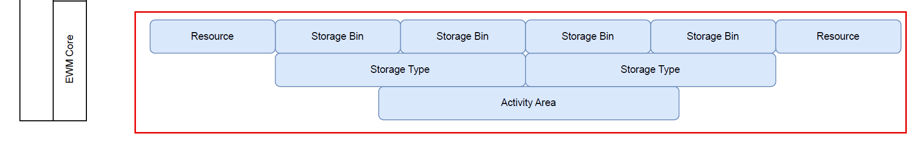
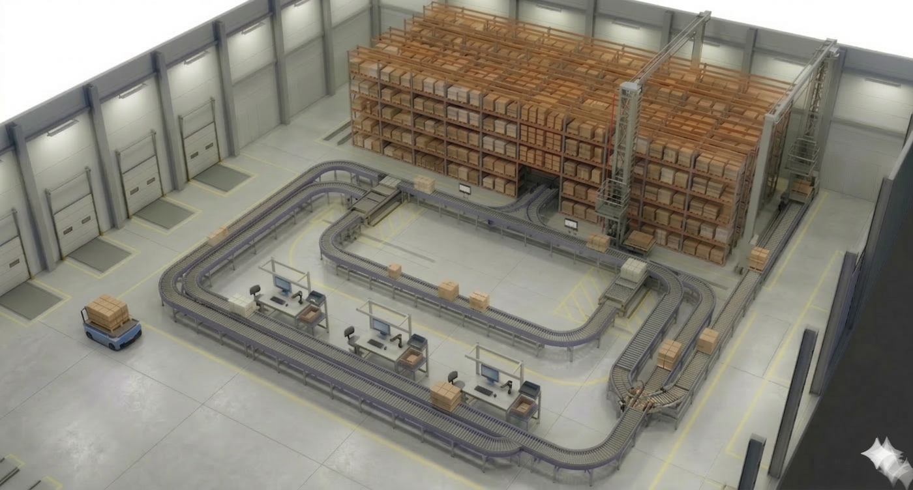
On top of that, we have the MFS Basic objects. This layer is built upon the EWM Core and enhances its objects with additional features. You can understand a communication point like a storage bin with special features, such as a dedicated process type which is used to putaway from here or a clarification bin which is used as a destination for HUs with errors. Similarly, you can understand an MFS resource like a normal resource but with special features like the specific way of task confirmation.
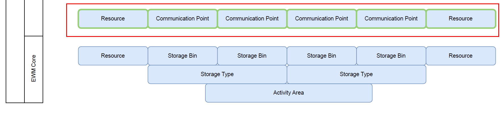
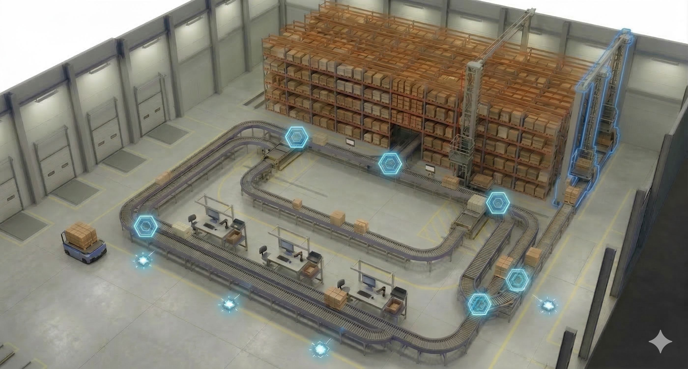
Then there are the Handling Units.
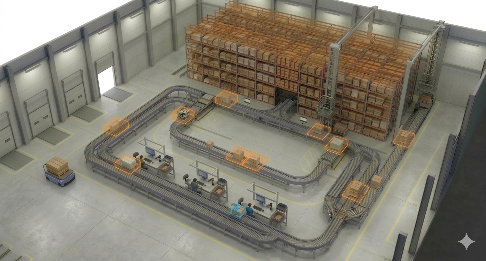
The HUs are shown here, but they could also be shown anywhere on the layout as everything is somewhat related to them. The HUs are our MVPs, representing the objects which are being moved by the automation equipment. They are the reason why we need everything else. It is best practice, highly recommended, and at many places technically required to work with HU and HU WTs when you implement EWM MFS. There are tricks to bypass this requirement, but I will not address this here. If you have technical questions about how to do that, you might want to reach out to technical experts like Mehmethan or Helios.
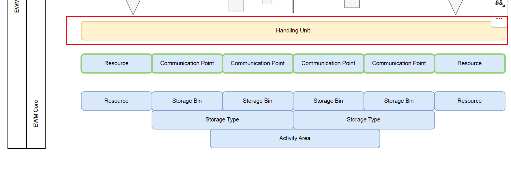
Warehouse Tasks & Routing Logic
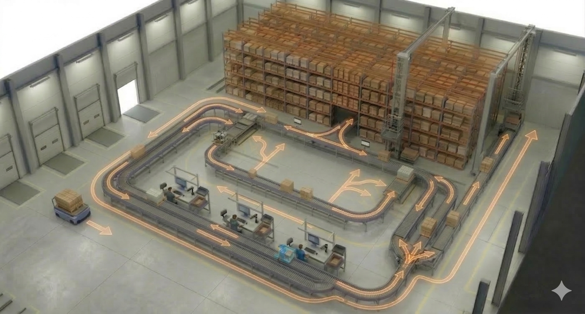
Warehouse tasks and orders are required in EWM to post Handling Units from one bin to another bin. This is not different with MFS. However, there is a big difference related to the usage of warehouse tasks between the two possible approaches for the routing. The routing logic determines intermediate destinations of the HU on its way to the final destination.
With the LOSC-based approach, we always create a warehouse task in EWM first (determining the destination based on the LOSC customizing and the final destination of the HU) and then create the telegram based upon the task. No telegram without a warehouse task. That also means when the subsystem sends a task confirmation telegram to EWM, we always have to wait for the HU lock, the technical task confirmation, and the technical task creation before a follow-up telegram with the next destination can be sent. That takes time, though it's usually no problem in a pallet automation environment.
With the Case conveyor routing approach, the telegram creation is 100% decoupled from the task creation. Once we've received a telegram for a task confirmation, we can create the telegram for the follow-up destination right away and do the movement posting of the HU afterwards. In this context we determine the destination based on the CC routing table, considering entries in the MFSHUMOVE table or open warehouse tasks. This roundtrip is much faster and allows quick responses in fast-moving environments.
Theoretically, it would even be possible to work without any movement posting for intermediate steps and only confirm the overarching task once the HU has reached its destination. While this saves processing time, it is common best practice to post intermediate steps for transparency. This can be done 'after the fact' (ATF), independent and decoupled from the telegram processing.
From an EWM perspective, the difference can also be described with a PULL vs. PUSH approach. With case conveyor routing (PULL), the subsystem actively asks for a destination, and only then EWM sends the telegram and updates the location. With LOSC (PUSH), the subsystem does not do anything as long as EWM does not create a task.
For my map I decided not to work with the wording that SAP gives use here. "LOSC" and "Case Conveyor" both consider the 'layout' of the material flow system and both could be used for either cases or pallets. So my suggestion for a more meaningful wording would be 'WT-dependent' routing and 'WT-independent routing'. To credit the wording used in the SAP documents and to simplify the conversion, I call it 'WT-dependent routing based on the case conveyor logic' and 'WT-independent routing based on the LOSC' from here onwards.
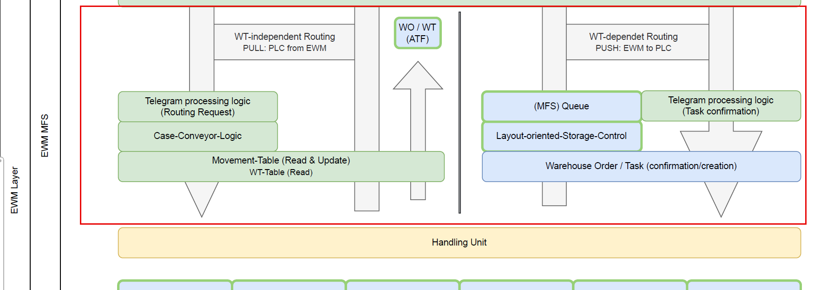
There are many other things to explain about these approaches, such as when to use both within one MFS, but I will save those details for a separate post and concentrate on what I want you to learn from this post (which is rather the big picture).
Communication, Middleware, and Hardware
Next are the MFS Communication objects. The Master Data and Customizing for the PLC and communication channel hold the details about the telegram structure - formatting of header data, start/stop characters, handshake mechanisms, connection details like IP and port and many other things.
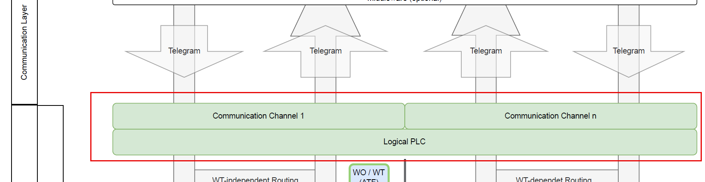
Then we have the Middleware as an optional component. You can implement another layer here if you cannot implement a direct TCP/IP connection (e.g., using SAP Plant Connectivity via RFC). You might see this in older projects from a time where EWM wasn't able to talk to the PLC directly via ABAP Push Channel Technology.
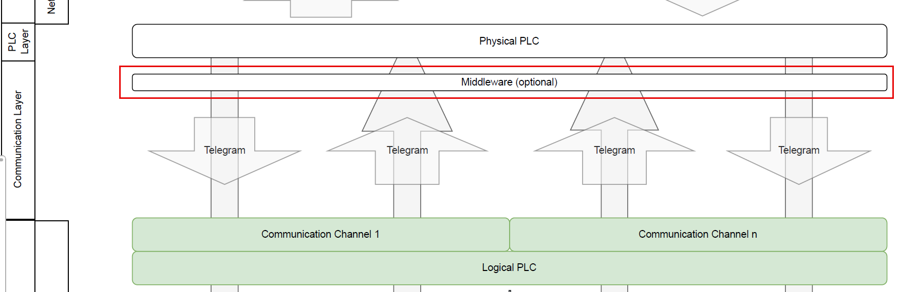
The PLC layer is where the controls software runs and where the physical hardware is connected to. It maintains a direct, bidirectional connection to the field level - actuators and sensors - to exchange signals via industrial networks.
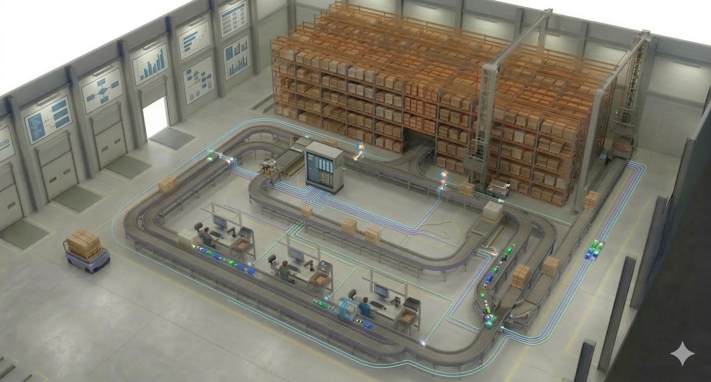
Finally, the Hardware layer encompasses the physical automation: sensors, motors, valves, scanners, and RFID. While these were mirrored as logical objects in our first layer, this is where the actual physical movement and data acquisition occur.
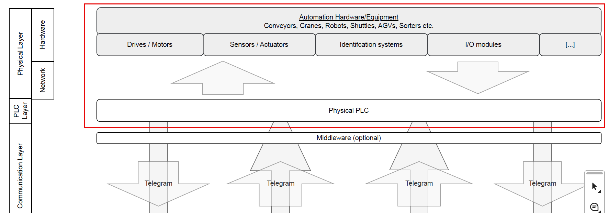
Open-sourcing the #MFSMAP
What we've built here is a tool for communication. For consultants and developers starting with MFS, it acts as a smooth entry point. For experienced pros, it is a great tool for communicating with non-EWM experts, like key-users or business teams, during design workshops or trainings.
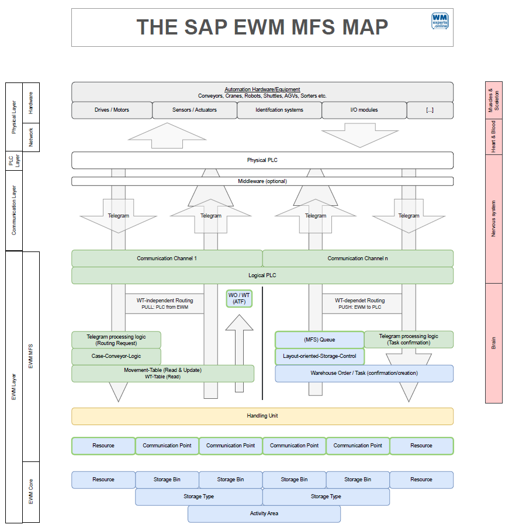
As you know it from my blog & youtube channel, I don't just want you to consume this - I want you to use it. It should become a living tool and community project. With this DRAW.io File or this link PDF File, you can download the file. Challenge it, improve it, and use it in your projects. All I am asking for is that you tell me where you think it should be changed. Put your proposals in the comments of the youtube video or post them on LinkedIn with the hashtag #MFSMAP. Or - for the techies amongst you - submit your proposals directly via pull request on GitHub: GitHub Repository MFS-MAP.
I will collect the best ideas and make an updated version "“ promoting your ideas - by the end of the year.
Huge thanks to Max for the groundwork and inspiration. I hope you found this helpful and I hope to find you here on my blog again when I am releasing new posts in the future!
📧 Newsletter
Get updates about new blog posts directly in your inbox.
▶️ YouTube Channel
Subscribe to my channel for regular tutorials & insights about SAP EWM.